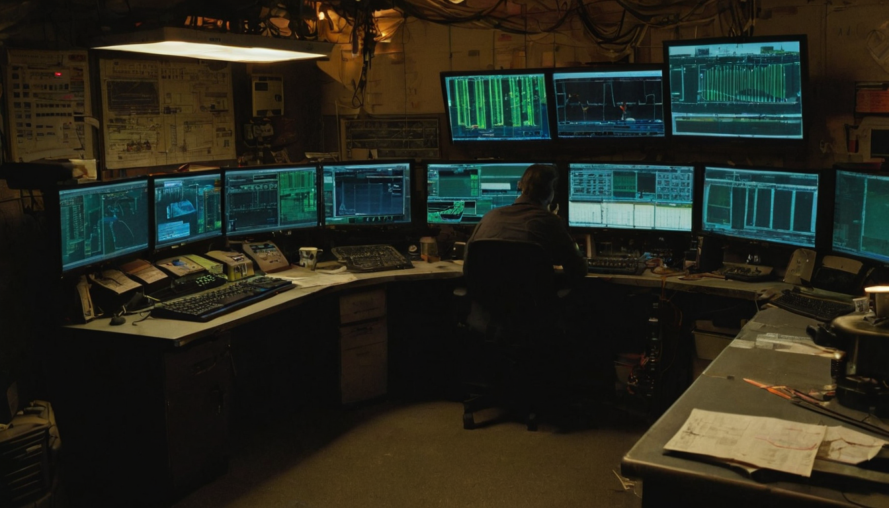
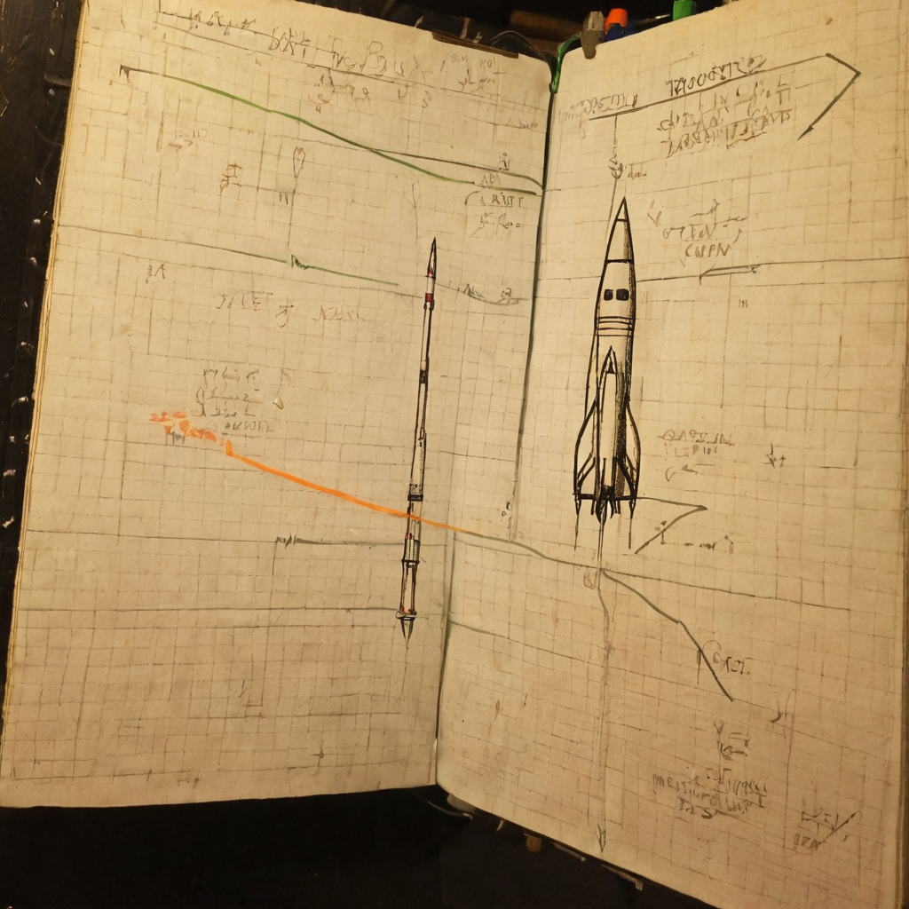

I stopped on this one because it is the opposite of hype. No big claims, no countdown clock graphics, just a plain list of what SpaceX says it wants to accomplish on the next Starship test flight. That kind of specificity is rare, and it tells you more about where the program actually is than any highlight reel would.
@cb_doge posted a rundown of the objectives SpaceX has laid out for the Super Heavy booster on Starship Flight 13. Based on the source post, the listed goals include completing a successful launch and stage separation, performing the full boostback burn (the maneuver that flips the booster around and flies it back toward the launch site), and testing hardware and software changes aimed at improving the reliability of Raptor engine relights. The post included one more bullet point that got cut off by a linked image or video in the original tweet, so I cannot say what that final objective was. No external links were attached beyond that.

Starship is one of the more consequential engineering efforts happening right now, not because of marketing, but because reusable heavy-lift rockets change the math on everything downstream: satellite constellations, deep space missions, launch cost per kilogram. Engine relight reliability specifically is one of those unglamorous problems that decides whether a rocket is reusable in practice or just reusable in theory. A booster that can launch, flip, burn back, and land depends on engines that relight consistently under real flight conditions, not just on a test stand. That is the kind of detail that does not trend on its own but actually matters for whether the whole reuse model holds up flight after flight.
What it does: Flight 13's stated Super Heavy objectives are testing the booster's ability to separate cleanly, fly the boostback burn, and relight engines more reliably using updated hardware and software.
Who it helps: Anyone tracking the pace of reusable rocket development, from space industry watchers to people curious about what launch costs might look like in the next few years.
What problem it solves: Engine relight has been a known trouble spot in booster flight tests. Iterating on it flight over flight is how SpaceX has closed gaps in the past, and this is another data point in that same pattern.
What still needs work: We do not know the full list of objectives since the post's last bullet was cut off, and test objectives are not the same as guaranteed outcomes. Flight tests exist to find what breaks.
What I would test first: The boostback burn and the relight sequence together, since that combination is where most of the past hard lessons have come from.
I like seeing objectives laid out this plainly instead of buried under marketing language. It is a good habit, honestly, and one worth noticing in general: say what you are actually trying to prove, then show whether it worked or not. That is the difference between a real test program and a highlight reel. @cb_doge sharing the list straight, without spin, is doing that same thing for the audience watching this program from outside.
The one thing I would flag gently is that the source post got cut off, so I am working with a partial list of objectives here. I would rather say that plainly than guess at what filled in the gap.
Worth watching whether the boostback burn completes cleanly and whether the relight changes actually show up as more consistent engine performance across the flight. Neither is guaranteed, and that is the whole point of flying a test rather than simulating one. If SpaceX or others share more detail on the missing objective, that is worth a follow-up look.
Source: X post by @cb_doge, https://x.com/i/web/status/2077630645170508023, retrieved on 2026-07-16. External references: none provided in the source post (the linked media referenced in the final bullet was not accessible from the retrieved text).